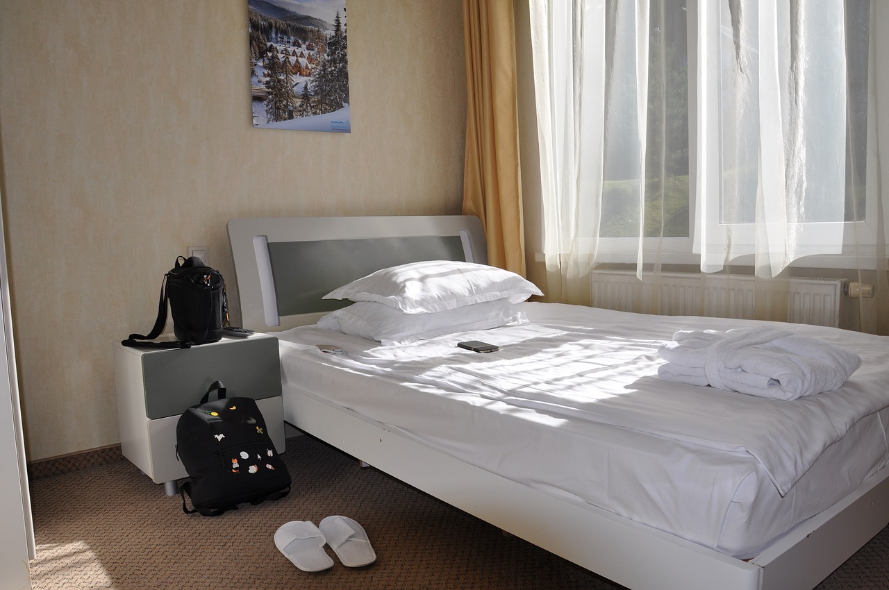
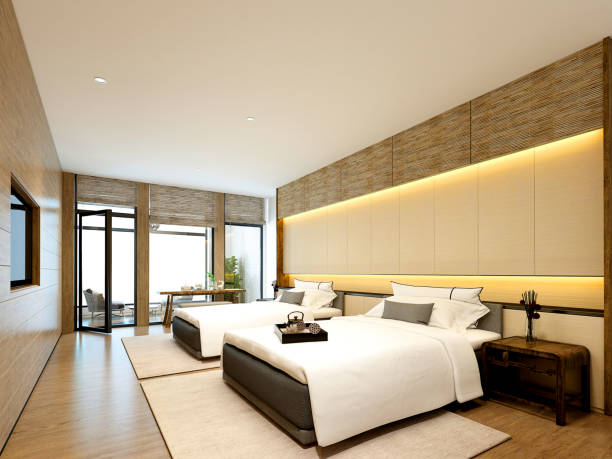
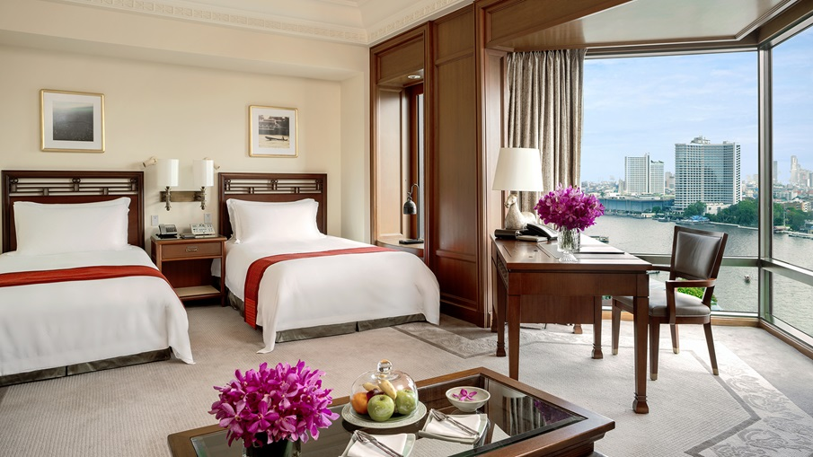
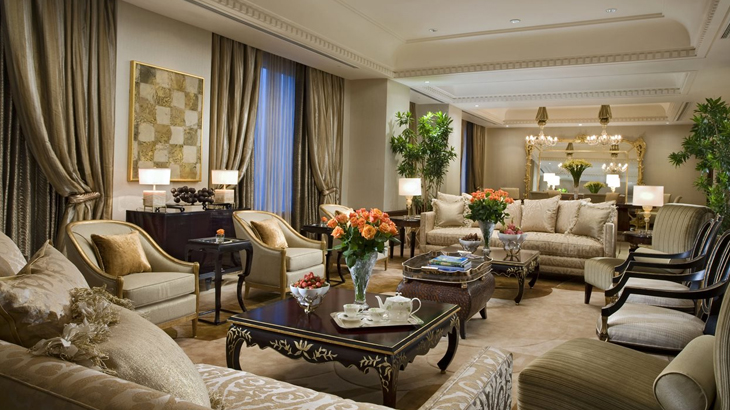

Tipe Kamar
Standard room
Tipe kamar ini paling dasar yang dimiliki hotel. Harga yang ditawarkan dari tipe kamar ini biasanya mempunyai harga paling murah jika dibandingkan tipe kamar lainnya.
Luas ruangannya juga hanya sekitar 30 meter persegi. Bicara soal fasilitas penginapan di kamar ini biasanya akan berbeda-beda tergantung pada tingkat atau klasifikasi hotel, terutama pada hotel berbintang.Fasilitas yang disediakan tipe Standar, yaitu:
- Kapasitas:1 orang
- Luas kamar: 24 m2
- Free wifi
- Tempat Tidur
- Televisi
- Kamar mandi
Harga per malam: Rp120.000 – Rp200.000
Superior Room
Kamar ini memiliki ukuran yang lebih luas dari kamar standard harganya juga lebih mahal. Superior biasanya kamarnya berada di lantai atas dari pada yang kamar standard kamar superior biasanya ada pilihan untuk kasur double bed atau twin bed.
Yang kamarnya double bed itu adalah satu kasur dengan ukuran queen size atau king size. Sedangkan yang kamarnya twin bed itu adalah dua kasur single di dalam kamar tersebut, namun ada juga hotel yang menyiapkan twin bed dengan dua kasur ukuran queen size.
- Free wifi
- Kapasitas:2 orang
- Luas kamar:30 m2
- Pengering rambutr
- Kulkas
Harga per malam: Rp220.000 – Rp300.000
Deluxe Room
Kamar jenis deluxe biasanya menyuguhkan pemandangan yang lebih menarik dari balik jendela lantai atas. Arti Deluxe sendiri memang sebuah kamar yang memiliki luas lebih lebar, fasilitas lebih banyak, dan pemandangan lebih baik dari kamar Superior.
Tipe kamar ini biasanya memiliki luas ruangan sekitar 40 meter persegi. Selain fasilitas standar, deluxe room juga memiliki fasilitas tambahan seperti:
- Free wifi
- Kapasitas:2 orang
- Luas kamar:40 m2
- Coffee maker
- Kulkas
- Letak kamar yang berada di lantai atas.
Harga per malam: Rp300.000 – Rp500.000
Presidential Suite Room
President Suite Eastparc dihadirkan untuk memenuhi kebutuhan tamu yang menginginkan pengalaman menginap dengan kamar eksklusif yang tidak lupa dengan sentuhan desain atmosfer ruangan yang hangat dan nyaman didalamnya. Kamar President Suite dilengkapi dengan interior mewah seperti lantai marmer dan balkoni pribadi yang luas untuk bersantai menikmati cerahnya langit Yogyakarta. Terletak di lantai 6 dengan akses connecting room dan lengkap dengan fasilitas yang menghibur di dalamnya.
- Free wifi
- Ukuran Kasur:2m x 2m (1 Tempat tidur ukuran King)
- Kapasitas :2 Orang
- Luas Kamar :100 m2
- Bak berendam ukuran besar
- Ruang makan
- Akses lounge eksekutif
- Dapur berperalatan lengkap
- Ruang tamu
- Ruang tidur terpisah
Harga per malam: Rp1.000.000 - Rp.5.000.000